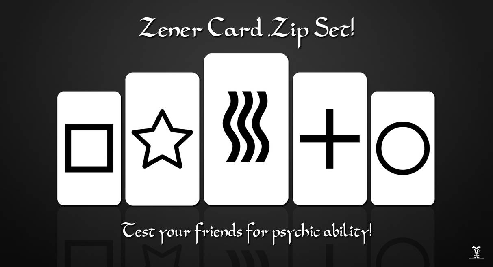

STAT 1010 - Fall 2022
Some people believe in the presence of Extrasensory Perception, or ESP. How could we prove whether it does or doesn’t exist?
One test for ESP is with Zener cards.
Since there are 5 cards, it would be possible to guess the correct card at random \(p=1/5\) times, or 20% of the time.
A person with ESP should be able to guess the correct card more often than 20%. But how much more often do they need to get it right for us to believe that ESP exists?
One way to determine something like this is to use a statistical test. A statistical test is a procedure to determine if the results from the sample are convincing enough to allow us to conclude something about the population.
When we perform a statistical test, we set out our hypotheses before we begin. There are two hypotheses,
null hypothesis \(H_0\), a statement about there being no effect, or no difference.
alternative hypothesis \(H_A\), the thing that we secretly hope will turn out to be true.
Thinking about the ESP experiment, we could use words to state our hypotheses
\(\begin{eqnarray*} &H_0:& \text{ ESP does not exist} \\ &H_A:& \text{ESP exists} \end{eqnarray*}\)
We could also write the hypotheses in terms of parameters,
\(\begin{eqnarray*} H_0: p \leq 1/5 \\ H_A: p > 1/5 \end{eqnarray*}\)
What are the null and alternate hypothesis for these decisions?
A snack-food chain runs a promotion in which shoppers are told that 1 in 4 kids’ meals includes a prize. A father buys two kids’ meals, and neither has a prize. He concludes that because neither has a prize, the chain is being deceptive.
In the previous example, we used probability to determine how likely it is to get two meals neither of which contain a prize. This process involves computing a test statistic (\(0.56\)).
To test a proportion, \(\hat{p}\), we must have a distribution with which to compare it. The distribution that we use is the distribution assumed in \(H_0\) we use \(p_0\) to denote this.
\[p_0 \sim N(p_0, \frac{{p_0}(1-{p_0})}{n}) \]
Under \(H_0\), we find
\[z_0 = \frac{\hat{p} - p_0} {\sqrt{\frac{p_0(1-p_0)}{n}}} \]
In the ESP example, we know that the population average for guessing ESP cards is 9 out of 24 cards. An interested participant took a training course to enhance their ESP. In the followup exam, they guessed 17 out of 36 cards. Did the course improve their ESP abilities?
9/24*36 and (1-9/24)*36 both > 101 -pnorm(1.2) or 1- pnorm((17/36- 9/24)/sqrt((0.375*(1-0.375))/36)) \(\approx 0.115\)To test a mean, \(\bar{x}\), we must have a distribution with which to compare it. The distribution that we use is the distribution assumed in \(H_0\) we use \(\mu_0\) to denote this. Because we don’t know \(\sigma\) we will once again use \(s\) from the sample
Under \(H_0\), we find
\[t = \frac{\bar{X} - \mu_0} {s/\sqrt{{n}}} \]
Let \(\bar{x} = 3281\), \(s = 529\), and \(n = 59\). Perform a hypothesis test that the sample comes from a distribution where the population mean is less than \(\mu_0 = 4000\)
pt(-10.44, df = 58) or pt((3281-4000)/(529/sqrt(59)), df = 58) \(\approx 3.07e-15\)Researcher Matt Motyl ran a study in 2010 with 2,000 participants. He wanted to determine if political moderates were able to perceive shades of grey more accurately than people on the far left or the far right. The p-value from the study was 0.01. Reject the null! Evidence in support of the idea that moderates can see grey better.
But then… he re-ran the study. This time, the p-value was 0.59. Not even close to significant.
What happened?!
Via Regina Nuzzo’s Nature article, Scientific method: Statistical Errors
There are two types of errors defined in hypothesis testing:
In the US, a person is innocent until proven guilty, and evidence of guilt must be beyond “the shadow of a doubt.” We can make two types of mistakes:
Two options:
or…
Because the probability of a Type I error is \(\alpha\), if you do many tests you will find significance in \(\alpha\) of them just by chance.
If you do 100 tests, you should expect to find 5 of them to be significant, just by chance.
This is the problem of multiple testing.
Okay, so \(\alpha\) of all tests show significance, just by random chance.
And things that look significant get published…
That means that a fair number of things that are published are actually false! This is pretty scary.
As a researcher:
As someone who reads about statistics:
In order to reduce the probability of making a Type II error, we can either
Sometimes, you find something that is very statistically significant, but not practically significant.
For example, a revision program might increase final exam grades with \(p-value < 0.00001\), but it may only increase final exam grades by \(1\%\). This is statistically significant but not practically significant.
Context is important!
These two are mostly interchangeable. However, tests only provide negative statements and does not give us much information about parameter values.